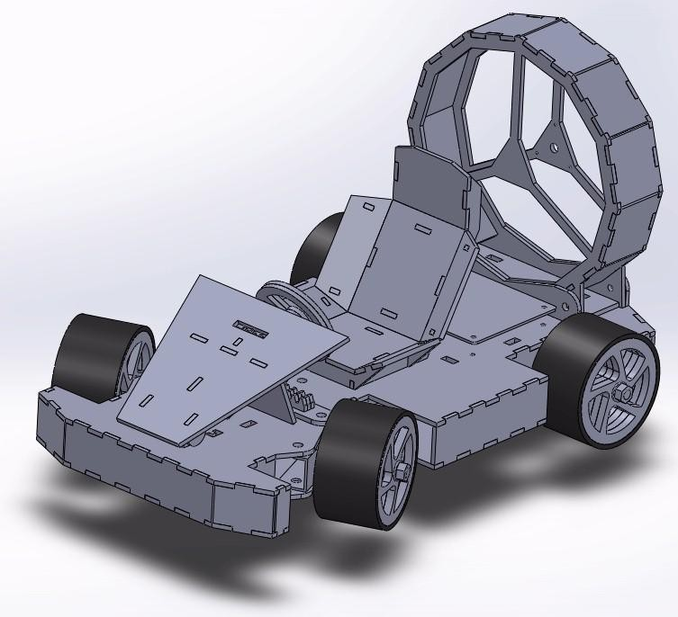
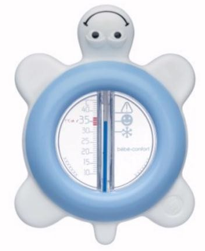

Étudiant GEII — disponible pour stage / alternance
Simon
Dartiguelongue
Électronique, automatisme, énergie : trois disciplines,
une formation, une approche globale des systèmes industriels.
Électronique, automatisme, énergie : trois disciplines,
une formation, une approche globale des systèmes industriels.
Formation
Une SAÉ est un projet concret réalisé en équipe, qui place l'étudiant face à une problématique technique réelle. Elle mobilise plusieurs compétences du référentiel BUT GEII et donne lieu à une évaluation. C'est le cœur de la pédagogie par projet de l'IUT.
Voir mes projets SAÉ →Les HTUT sont des heures de formation sous forme de vidéos pédagogiques. Elles permettent d'acquérir la maîtrise d'outils, de logiciels et de méthodologies techniques — des compétences directement mobilisées lors des SAÉ. Elles constituent la brique d'apprentissage qui alimente le travail en projet.
Réalisations SAÉ

Conception et modélisation d'un kart propulsé par hélice. Travail sur la chaîne d'énergie, la transmission et la commande.

Conception d'un thermomètre électronique pour bain de bébé. Schématique, routage PCB et validation des mesures.
Système son et lumière synchronisé inspiré du guidage d'avions sur pont d'envol. Programmation et gestion des signaux.
Référentiel BUT GEII